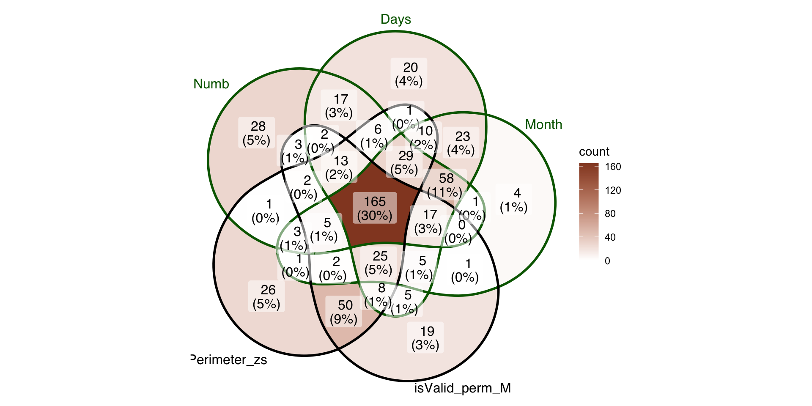
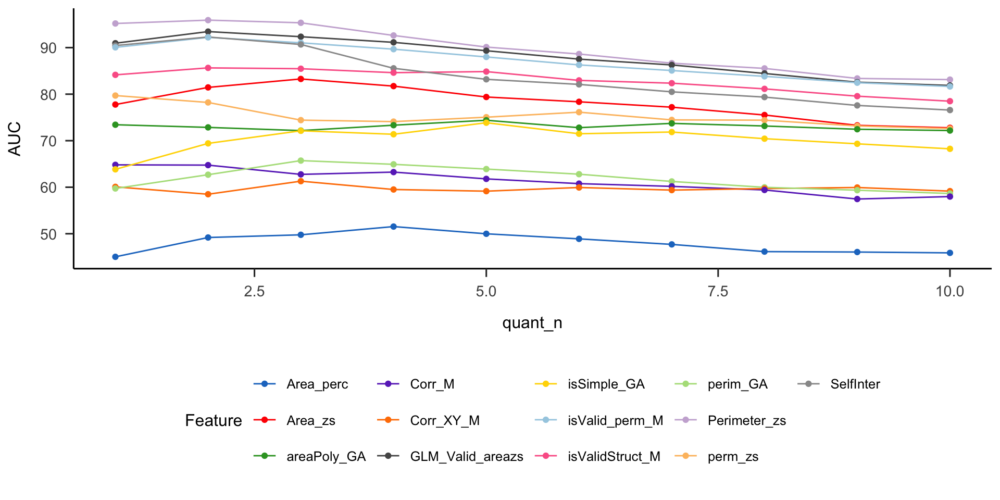
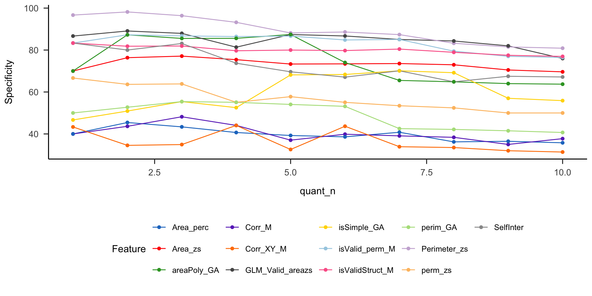
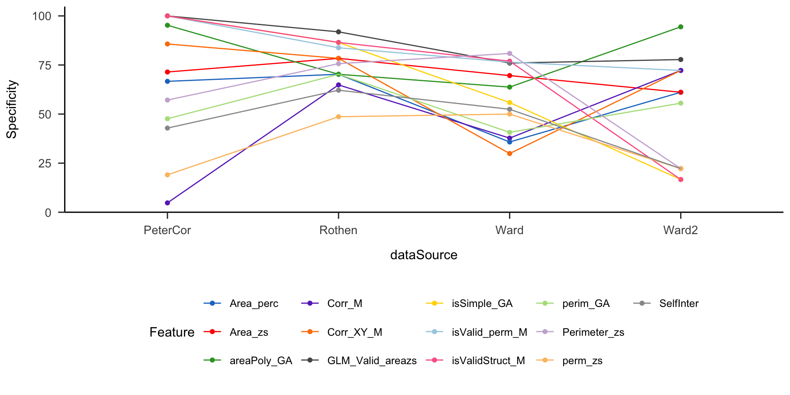

| dataSource | Ctl | Syn |
|---|---|---|
| PeterCor | 21 | 22 |
| Rothen | 37 | 32 |
| Ward | 213 | 252 |
| Ward2 | 18 | 90 |
Pre-registered report: Space Sequence Synesthesia Diagnostic using form mapping
Rémy Lachelin ![]()
UniDistance Suisse
Chhavi Sachdeva
UniDistance Suisse
Nicolas Rothen
UniDistance Suisse
Phase I. Population
From the final sample of N = 685, 396 were synesthetes and 289 controls. Table 2 breaks down the number of synesthetes and control contributed by each dataset.
Since not all the data is directly associated to demographics, we resume in Table 1 gthe original sample’s reported descriptives.
Regarding the synesthes, we can only describe their profile from the data by Pr. Ward (i.e. from 573 cases. These profiles are described only for the stimulus class that are used in the consistency test (i.e. number, weekdays and month), see Figure 1.

Figure 1: Venn diagram of the types of self-reported SSS
Phase I Results
Each feature in classifying SSS from controls was compared with Receiver Operator Characteristics (ROC) analyses. Area Under the Curve (AUC) is used to determine which feature is best at classifying SSS from Controls. In Addition, we also use discrimination power (Equation 4).
\[ DP = \frac{sqrt{(3)}}{\pi} (log(X) + log(Y)) \qquad(4)\]
where: \(X = sensitivity/(1−sensitivity)\) and \(Y = specificity/ (1−specificity)\)
Optimal cutoff’s are calculated using Youden’s criterias.
The results from the ROC analysis for each features are summarized in Table 3,sorted by the highest AUC and Figure 2. The results suggest that best AUC with the permuted validity score (AUC = 80.09, cut-off = 0.17) and then the average normalized perimiter between the repetitions of each stimuli (AUC = 78.50, cut-off = 1.92 z-scores). Interestingly, while the permuted validity cut-off leads to higher specificity (77.50 vs. 74.29), the opposite is true for the sensitivity criteria (73.60 vs. 70.40).
| Feature | AUC | DP | threshold | sensitivity | specificity | ci_low | ci_high | power |
|---|---|---|---|---|---|---|---|---|
| GLM_Valid_areazs | 80.33 | 2.12 | -0.07 | 79.73 | 68.93 | 76.94 | 83.72 | 1.00 |
| isValid_perm_M | 80.09 | 2.06 | 0.17 | 70.40 | 77.50 | 76.69 | 83.50 | 1.00 |
| Perimeter_zs | 78.50 | 2.04 | 1.92 | 73.60 | 74.29 | 74.80 | 82.20 | 1.00 |
| isValidStruct_M | 77.07 | 1.81 | 0.17 | 71.73 | 71.43 | 73.53 | 80.61 | 1.00 |
| SelfInter | 71.71 | 1.68 | 1.17 | 79.47 | 58.93 | 67.60 | 75.82 | 1.00 |
| areaPoly_GA | 70.96 | 1.30 | 1.29 | 64.53 | 67.50 | 67.02 | 74.90 | 1.00 |
| Area_zs | 70.94 | 1.72 | 0.08 | 75.47 | 65.36 | 66.66 | 75.22 | 1.00 |
| isSimple_GA | 69.91 | 1.26 | 0.28 | 60.53 | 70.36 | 65.93 | 73.89 | 1.00 |
| perm_zs | 65.80 | 2.18 | -3.67 | 93.87 | 37.86 | 61.40 | 70.21 | 1.00 |
| perim_GA | 60.65 | 1.32 | 10.46 | 83.47 | 43.21 | 56.03 | 65.27 | 1.00 |
| Corr_XY_M | 59.00 | 0.98 | 0.20 | 82.40 | 36.79 | 54.43 | 63.57 | 0.98 |
| Corr_M | 56.32 | 1.07 | 0.08 | 88.00 | 28.93 | 51.73 | 60.91 | 0.81 |
| Area_perc | 51.93 | 0.82 | 0.21 | 76.27 | 41.79 | 47.13 | 56.73 | 0.14 |


For the concern that some criteria might bias towards types of synesthesia, we compared the groups by sub-type of SSS (i.e. weekdays, months and numbers) with the classifications using the cut-offs for permuted validity and perimeter. Figure 4 shows the venn diagram including only data from Ward (since we don’t have the details from the other datasets). This suggests that 11% of the subsample in

Further analyses aimed at estimating the reliability of features when sub sampling the dataset with different slices. First Section 10.1 we recalculated the ROC by sub sampling the data from the most extreme groups. The extreme groups were defined by the percentiles on the questionnaire sores, hence only the data from Ward is included there. We computed AUC, sensitivity and sensibility for the 10-90 %, 20-80 %, 30-70 %, 40-60 % subsampled participants depending on the dsistribution of the syneshtesia questionnaire (see Ward et al. 2018). The results for AUC Figure 5, sensitivity Figure 6 and specificity Figure 7.
However we also found differences across the datasets, see Figure 9 for AUC, Figure 10 for sensitivity and Figure 11 for specificity.
To confirm that the results are not circular, we correlated questionnaire scores with the features results, see Section 10.2, Figure 8
Finally, descriptively we also wanted to see whether one of the main criteria would be more beneficial for one form of SSS or the other, see
Appendix 1 Subsambled data by questionnaire quantiles (10% steps)
In the following, we compare the data sampled by the questionnaire score. Based on the distribution of the questionnaire score, we sampled the 10 % with the lowest and 10 % with the highest scores. Those are then compared with the 20 and 20 % and so on until 40 and 40 %. The rationale of this procedure is that AUC, sensitivity and specificity should remain stable across percentiles for a feature to be valid, see Figure 5. In other words the ROC should remain unchanged if we take extreme groups compared to less extreme ones.



Appendix 2 Correlation with self-report
The best criterion should also best correlate with SSS self-reported questionnaire score.
Works only with Ward’s aggregated data, see Figure 6.

Figure 8: Correlation with self-reported questionnaire
Appendix 3 By dataset
Here we compare the ROC for each specific data sample. Although the different authors have used a similar method, there might be a recruitment bias or other.


